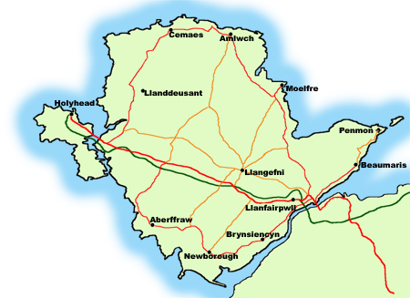
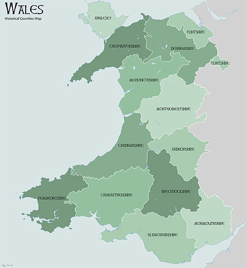

Anglesey Coastal Path
April/May 2015
The circuit of the coast of the Isle of Anglesey is a 130 (or so) mile route, with much variety and outstanding beauty. We walked this with the support of Anglesey Walking Holidays, meaning Gillian and Eurwyn Williams. They provided incredibly friendly and comforting help. They live on Anglesey and know everything there is to know. They would willingly have come and found us any time we might have needed them.
Anglesey is the island at the north-west corner of Wales. In fact, off the west side of Anglesey is a smaller island called Holy Island, and our walk included the coast of Holy Island, too.
|  |  |
I've divided our ten-day walk into four segments. They vary in distance and time -- the first segment was one day, others were two to four days.
| Llanfairpwll to Penmon |
| Penmon to Cemaes |
| Cemaes to Holyhead |
| Holyhead to Llanfairpwll |